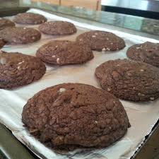

Nutella cookies recipes

Description
These Nutella cookies are super moist and soft, with flavors of both chocolate and hazelnut in every bite!
Ingredients
- 1/2 cup butter, at room temperature
- 1 egg
- ½ cup white sugar
- 1 teaspoon vanilla extract
- 1 cup chocolate-hazelnut spread (such as Nutella)
- 1 cup all-purpose flour
- ¼ cup unsweetened cocoa powder
- 1 cup milk chocolate chips
- ½ cup chopped hazelnuts
Steps
- Preheat the oven to 350 degrees F (175 degrees C). Line 2 baking sheets with aluminum foil or parchment paper.
- Cream butter and sugar in a medium bowl with an electric mixer until light and fluffy. Add egg and vanilla extract; beat well.
Mix in chocolate-hazelnut spread until well-combined. Gradually mix in flour and cocoa powder. Stir in chocolate chips and hazelnuts.
- Drop spoonfuls of dough 2 inches apart onto the prepared baking sheets.
- Bake in the preheated oven for 8 minutes. Turn the oven off and allow the cookies to sit in the oven for 2 minutes more.
Serve cookies warm or transfer to a wire rack to cool completely.